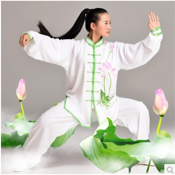

Youth

Senior


Taiji Quan (Tai Chi Chuan) is a time-tested art which gently exercises the body, the energy flow, and the mind, and can be used for health, longevity, mental freshness, and spiritual development. Taiji Quan aims at well-being, including the attainment of grace and balance, the promotion of physical and emotional health, and the development of energy flow. Though there are many varieties of Taiji Quan today, all have a common philosophy of relaxation of the mind and body so the body's natural energy can flow freely.
Taiji Quan, which means supreme ultimate boxing, was developed in the 17th century by Zhang San Feng, a Taoist monk who believed that martial arts practitioners need not exert physical energy when performing techniques. Instead, he believed that relaxation of the mind and body when facing confrontation would allow a practitioner to neutralize any attack.